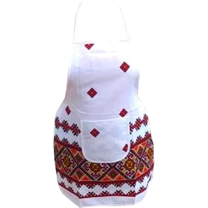
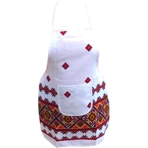
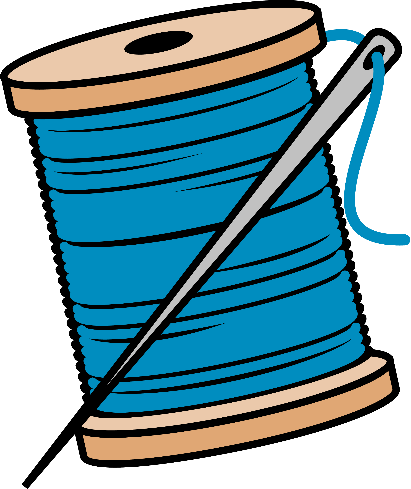
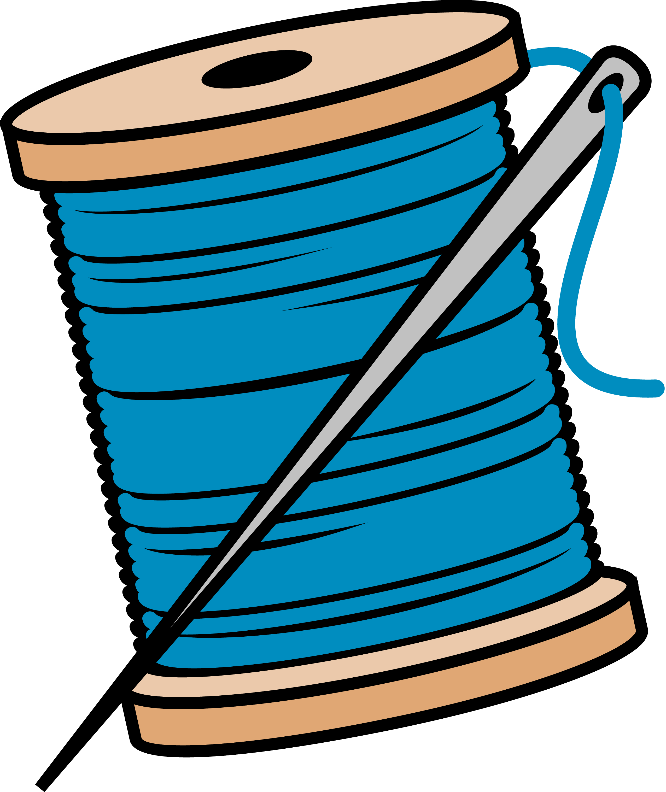

Șorțul de bucătărie este un accesoriu indispensabil în orice gospodărie, servind
atât ca protecție împotriva petelor și murdăriei, cât și ca element estetic.
Istoria sa este strâns legată de evoluția societății și a rolurilor asumate de
diferite categorii de oameni de-a lungul timpului.
Primele mențiuni despre utilizarea șorțului datează din antichitate. În
civilizațiile egiptene, grecești și romane, șorțurile erau purtate de preoți,
meșteșugari și servitori, având roluri atât practice, cât și simbolice. În
Egiptul Antic, de exemplu, șorțurile erau asociate cu ritualuri religioase și
erau adesea decorate cu simboluri sacre.
În Evul Mediu, șorțul a devenit un element esențial în uniforma meșteșugarilor
și a breslelor. Fierarii, brutarii, măcelarii și alți artizani purtau șorțuri
groase din piele sau pânză pentru a se proteja de scântei, tăieturi sau
murdărie. În această perioadă, șorțul a început să fie și un simbol al meseriei,
fiecare breaslă având modele specifice.
Odată cu Revoluția Industrială și schimbările sociale aduse de aceasta, șorțul a
intrat și în garderoba casnică. Femeile au început să poarte șorțuri în
activitățile zilnice, atât pentru protecție, cât și ca semn al îndemânării
gospodărești. Șorțurile din această perioadă erau adesea decorate cu broderii și
dantele, reflectând statutul social al purtătoarei.
În prima jumătate a secolului al XX-lea, șorțul de bucătărie a devenit un simbol
al feminității și al rolului tradițional al femeii în casă. În anii 1950,
imaginea gospodinei perfecte era adesea asociată cu o femeie zâmbitoare,
îmbrăcată într-un șorț curat și elegant. Producția în masă a dus la
diversificarea materialelor și a designurilor, făcând șorțul accesibil tuturor.
Astăzi, șorțul de bucătărie nu mai este doar un obiect funcțional, ci și unul de
modă și expresie personală. Există o varietate imensă de modele, de la cele
tradiționale la cele cu imprimeuri amuzante sau mesaje personalizate. În plus,
șorțul a depășit granițele bucătăriei, fiind folosit în diverse domenii precum
grădinăritul, arta sau meșteșugurile.
Șorțul a devenit și un simbol în cultura populară, apărând în filme, literatură
și artă ca reprezentare a ospitalității, muncii sau chiar a revoltei față de
rolurile tradiționale. De asemenea, în unele culturi, șorțul are semnificații
rituale sau ceremoniale.
De-a lungul istoriei, șorțul de bucătărie a evoluat de la un simplu accesoriu
practic la un simbol cultural complex. Reflectând schimbările sociale și
economice, acesta rămâne un element relevant și versatil, adaptându-se constant
nevoilor și gusturilor contemporane.


 

 
